Augmenting convnets with aggregated attention
Author: Aritra Roy Gosthipaty
Date created: 2022/01/22
Last modified: 2022/01/22
Description: Building a patch-convnet architecture and visualizing its attention maps.

Introduction
Vision transformers (Dosovitskiy et. al)
have emerged as a powerful alternative to Convolutional Neural Networks.
ViTs process the images in a patch-based manner. The image information
is then aggregated into a CLASS token. This token correlates to the
most important patches of the image for a particular classification decision.
The interaction between the CLASS token and the patches can be visualized
to help explain a classification decision. In the academic paper
Augmenting convolutional networks with attention-based aggregation
by Touvron et. al, the authors propose to set up an equivalent visualization for
convnets. They propose to substitute the global average pooling layer
of a convnet with a Transformer layer. The self-attention layer of the
Transformer would produce attention maps that correspond to the
most attended patches of the image for the classification decision.
In this example, we minimally implement the ideas of Augmenting Convolutional networks with attention-based aggregation. The main goal of this example is to cover the following ideas, with minor modifications (to adjust the implementation with CIFAR10):
- The simple design for the attention-based pooling layer, such that it explicitly provides the weights (importance) of the different patches.
- The novel architecture of convnet is called the PatchConvNet which deviates from the age old pyramidal architecture.
Setup and Imports
This example requires TensorFlow Addons, which can be installed using the following command:
pip install -U tensorflow-addons
import math
import numpy as np
import tensorflow as tf
from tensorflow import keras
import matplotlib.pyplot as plt
import keras
from keras import layers
from keras import ops
from tensorflow import data as tf_data
# Set seed for reproducibiltiy
SEED = 42
keras.utils.set_random_seed(SEED)
Hyperparameters
# DATA
BATCH_SIZE = 128
BUFFER_SIZE = BATCH_SIZE * 2
AUTO = tf_data.AUTOTUNE
INPUT_SHAPE = (32, 32, 3)
NUM_CLASSES = 10 # for CIFAR 10
# AUGMENTATION
IMAGE_SIZE = 48 # We will resize input images to this size.
# ARCHITECTURE
DIMENSIONS = 256
SE_RATIO = 8
TRUNK_DEPTH = 2
# OPTIMIZER
LEARNING_RATE = 1e-3
WEIGHT_DECAY = 1e-4
# PRETRAINING
EPOCHS = 50
Load the CIFAR10 dataset
(x_train, y_train), (x_test, y_test) = keras.datasets.cifar10.load_data()
(x_train, y_train), (x_val, y_val) = (
(x_train[:40000], y_train[:40000]),
(x_train[40000:], y_train[40000:]),
)
print(f"Training samples: {len(x_train)}")
print(f"Validation samples: {len(x_val)}")
print(f"Testing samples: {len(x_test)}")
train_ds = tf_data.Dataset.from_tensor_slices((x_train, y_train))
train_ds = train_ds.shuffle(BUFFER_SIZE).batch(BATCH_SIZE).prefetch(AUTO)
val_ds = tf_data.Dataset.from_tensor_slices((x_val, y_val))
val_ds = val_ds.batch(BATCH_SIZE).prefetch(AUTO)
test_ds = tf_data.Dataset.from_tensor_slices((x_test, y_test))
test_ds = test_ds.batch(BATCH_SIZE).prefetch(AUTO)
Downloading data from https://www.cs.toronto.edu/~kriz/cifar-10-python.tar.gz
170500096/170498071 [==============================] - 16s 0us/step
170508288/170498071 [==============================] - 16s 0us/step
Training samples: 40000
Validation samples: 10000
Testing samples: 10000
Augmentation layers
def get_preprocessing():
model = keras.Sequential(
[
layers.Rescaling(1 / 255.0),
layers.Resizing(IMAGE_SIZE, IMAGE_SIZE),
],
name="preprocessing",
)
return model
def get_train_augmentation_model():
model = keras.Sequential(
[
layers.Rescaling(1 / 255.0),
layers.Resizing(INPUT_SHAPE[0] + 20, INPUT_SHAPE[0] + 20),
layers.RandomCrop(IMAGE_SIZE, IMAGE_SIZE),
layers.RandomFlip("horizontal"),
],
name="train_data_augmentation",
)
return model
Convolutional stem
The stem of the model is a lightweight preprocessing module that maps images pixels to a set of vectors (patches).
def build_convolutional_stem(dimensions):
"""Build the convolutional stem.
Args:
dimensions: The embedding dimension of the patches (d in paper).
Returs:
The convolutional stem as a keras seqeuntial
model.
"""
config = {
"kernel_size": (3, 3),
"strides": (2, 2),
"activation": ops.gelu,
"padding": "same",
}
convolutional_stem = keras.Sequential(
[
layers.Conv2D(filters=dimensions // 2, **config),
layers.Conv2D(filters=dimensions, **config),
],
name="convolutional_stem",
)
return convolutional_stem
Convolutional trunk
The trunk of the model is the most compute-intesive part. It consists
of N stacked residual convolutional blocks.
class SqueezeExcite(layers.Layer):
"""Applies squeeze and excitation to input feature maps as seen in
https://arxiv.org/abs/1709.01507.
Args:
ratio: The ratio with which the feature map needs to be reduced in
the reduction phase.
Inputs:
Convolutional features.
Outputs:
Attention modified feature maps.
"""
def __init__(self, ratio, **kwargs):
super().__init__(**kwargs)
self.ratio = ratio
def get_config(self):
config = super().get_config()
config.update({"ratio": self.ratio})
return config
def build(self, input_shape):
filters = input_shape[-1]
self.squeeze = layers.GlobalAveragePooling2D(keepdims=True)
self.reduction = layers.Dense(
units=filters // self.ratio,
activation="relu",
use_bias=False,
)
self.excite = layers.Dense(units=filters, activation="sigmoid", use_bias=False)
self.multiply = layers.Multiply()
def call(self, x):
shortcut = x
x = self.squeeze(x)
x = self.reduction(x)
x = self.excite(x)
x = self.multiply([shortcut, x])
return x
class Trunk(layers.Layer):
"""Convolutional residual trunk as in the https://arxiv.org/abs/2112.13692
Args:
depth: Number of trunk residual blocks
dimensions: Dimnesion of the model (denoted by d in the paper)
ratio: The Squeeze-Excitation ratio
Inputs:
Convolutional features extracted from the conv stem.
Outputs:
Flattened patches.
"""
def __init__(self, depth, dimensions, ratio, **kwargs):
super().__init__(**kwargs)
self.ratio = ratio
self.dimensions = dimensions
self.depth = depth
def get_config(self):
config = super().get_config()
config.update(
{
"ratio": self.ratio,
"dimensions": self.dimensions,
"depth": self.depth,
}
)
return config
def build(self, input_shape):
config = {
"filters": self.dimensions,
"activation": ops.gelu,
"padding": "same",
}
trunk_block = [
layers.LayerNormalization(epsilon=1e-6),
layers.Conv2D(kernel_size=(1, 1), **config),
layers.Conv2D(kernel_size=(3, 3), **config),
SqueezeExcite(ratio=self.ratio),
layers.Conv2D(kernel_size=(1, 1), filters=self.dimensions, padding="same"),
]
self.trunk_blocks = [keras.Sequential(trunk_block) for _ in range(self.depth)]
self.add = layers.Add()
self.flatten_spatial = layers.Reshape((-1, self.dimensions))
def call(self, x):
# Remember the input.
shortcut = x
for trunk_block in self.trunk_blocks:
output = trunk_block(x)
shortcut = self.add([output, shortcut])
x = shortcut
# Flatten the patches.
x = self.flatten_spatial(x)
return x
Attention Pooling
The output of the convolutional trunk is attended with a trainable query class token. The resulting attention map is the weight of every patch of the image for a classification decision.
class AttentionPooling(layers.Layer):
"""Applies attention to the patches extracted form the
trunk with the CLS token.
Args:
dimensions: The dimension of the whole architecture.
num_classes: The number of classes in the dataset.
Inputs:
Flattened patches from the trunk.
Outputs:
The modifies CLS token.
"""
def __init__(self, dimensions, num_classes, **kwargs):
super().__init__(**kwargs)
self.dimensions = dimensions
self.num_classes = num_classes
self.cls = keras.Variable(ops.zeros((1, 1, dimensions)))
def get_config(self):
config = super().get_config()
config.update(
{
"dimensions": self.dimensions,
"num_classes": self.num_classes,
"cls": self.cls.numpy(),
}
)
return config
def build(self, input_shape):
self.attention = layers.MultiHeadAttention(
num_heads=1,
key_dim=self.dimensions,
dropout=0.2,
)
self.layer_norm1 = layers.LayerNormalization(epsilon=1e-6)
self.layer_norm2 = layers.LayerNormalization(epsilon=1e-6)
self.layer_norm3 = layers.LayerNormalization(epsilon=1e-6)
self.mlp = keras.Sequential(
[
layers.Dense(units=self.dimensions, activation=ops.gelu),
layers.Dropout(0.2),
layers.Dense(units=self.dimensions, activation=ops.gelu),
]
)
self.dense = layers.Dense(units=self.num_classes)
self.flatten = layers.Flatten()
def call(self, x):
batch_size = ops.shape(x)[0]
# Expand the class token batch number of times.
class_token = ops.repeat(self.cls, repeats=batch_size, axis=0)
# Concat the input with the trainable class token.
x = ops.concatenate([class_token, x], axis=1)
# Apply attention to x.
x = self.layer_norm1(x)
x, viz_weights = self.attention(
query=x[:, 0:1], key=x, value=x, return_attention_scores=True
)
class_token = class_token + x
class_token = self.layer_norm2(class_token)
class_token = self.flatten(class_token)
class_token = self.layer_norm3(class_token)
class_token = class_token + self.mlp(class_token)
# Build the logits
logits = self.dense(class_token)
return logits, ops.squeeze(viz_weights)[..., 1:]
Patch convnet
The patch-convnet is shown in the figure below.
 |
|---|
| Source |
All the modules in the architecture are built in the earlier seciton. In this section, we stack all of the different modules together.
class PatchConvNet(keras.Model):
def __init__(
self,
stem,
trunk,
attention_pooling,
preprocessing_model,
train_augmentation_model,
**kwargs,
):
super().__init__(**kwargs)
self.stem = stem
self.trunk = trunk
self.attention_pooling = attention_pooling
self.train_augmentation_model = train_augmentation_model
self.preprocessing_model = preprocessing_model
def get_config(self):
config = super().get_config()
config.update(
{
"stem": self.stem,
"trunk": self.trunk,
"attention_pooling": self.attention_pooling,
"train_augmentation_model": self.train_augmentation_model,
"preprocessing_model": self.preprocessing_model,
}
)
return config
def _calculate_loss(self, inputs, test=False):
images, labels = inputs
# Augment the input images.
if test:
augmented_images = self.preprocessing_model(images)
else:
augmented_images = self.train_augmentation_model(images)
# Pass through the stem.
x = self.stem(augmented_images)
# Pass through the trunk.
x = self.trunk(x)
# Pass through the attention pooling block.
logits, _ = self.attention_pooling(x)
# Compute the total loss.
total_loss = self.compiled_loss(labels, logits)
return total_loss, logits
def train_step(self, inputs):
with tf.GradientTape() as tape:
total_loss, logits = self._calculate_loss(inputs)
# Apply gradients.
train_vars = [
self.stem.trainable_variables,
self.trunk.trainable_variables,
self.attention_pooling.trainable_variables,
]
grads = tape.gradient(total_loss, train_vars)
trainable_variable_list = []
for grad, var in zip(grads, train_vars):
for g, v in zip(grad, var):
trainable_variable_list.append((g, v))
self.optimizer.apply_gradients(trainable_variable_list)
# Report progress.
_, labels = inputs
self.compiled_metrics.update_state(labels, logits)
return {m.name: m.result() for m in self.metrics}
def test_step(self, inputs):
total_loss, logits = self._calculate_loss(inputs, test=True)
# Report progress.
_, labels = inputs
self.compiled_metrics.update_state(labels, logits)
return {m.name: m.result() for m in self.metrics}
def call(self, images):
# Augment the input images.
augmented_images = self.preprocessing_model(images)
# Pass through the stem.
x = self.stem(augmented_images)
# Pass through the trunk.
x = self.trunk(x)
# Pass through the attention pooling block.
logits, viz_weights = self.attention_pooling(x)
return logits, viz_weights
Callbacks
This callback will plot the image and the attention map overlayed on the image.
# Taking a batch of test inputs to measure model's progress.
test_images, test_labels = next(iter(test_ds))
class TrainMonitor(keras.callbacks.Callback):
def __init__(self, epoch_interval=None):
self.epoch_interval = epoch_interval
def on_epoch_end(self, epoch, logs=None):
if self.epoch_interval and epoch % self.epoch_interval == 4:
test_augmented_images = self.model.preprocessing_model(test_images)
# Pass through the stem.
test_x = self.model.stem(test_augmented_images)
# Pass through the trunk.
test_x = self.model.trunk(test_x)
# Pass through the attention pooling block.
_, test_viz_weights = self.model.attention_pooling(test_x)
# Reshape the vizualization weights
num_patches = ops.shape(test_viz_weights)[-1]
height = width = int(math.sqrt(num_patches))
test_viz_weights = layers.Reshape((height, width))(test_viz_weights)
# Take a random image and its attention weights.
index = np.random.randint(low=0, high=ops.shape(test_augmented_images)[0])
selected_image = test_augmented_images[index]
selected_weight = test_viz_weights[index]
# Plot the images and the overlayed attention map.
fig, ax = plt.subplots(nrows=1, ncols=2, figsize=(10, 5))
ax[0].imshow(selected_image)
ax[0].set_title(f"Original: {epoch:03d}")
ax[0].axis("off")
img = ax[1].imshow(selected_image)
ax[1].imshow(
selected_weight, cmap="inferno", alpha=0.6, extent=img.get_extent()
)
ax[1].set_title(f"Attended: {epoch:03d}")
ax[1].axis("off")
plt.axis("off")
plt.show()
plt.close()
Learning rate schedule
class WarmUpCosine(keras.optimizers.schedules.LearningRateSchedule):
def __init__(
self, learning_rate_base, total_steps, warmup_learning_rate, warmup_steps
):
super().__init__()
self.learning_rate_base = learning_rate_base
self.total_steps = total_steps
self.warmup_learning_rate = warmup_learning_rate
self.warmup_steps = warmup_steps
self.pi = np.pi
def __call__(self, step):
if self.total_steps < self.warmup_steps:
raise ValueError("Total_steps must be larger or equal to warmup_steps.")
cos_annealed_lr = ops.cos(
self.pi
* (ops.cast(step, "float32") - self.warmup_steps)
/ float(self.total_steps - self.warmup_steps)
)
learning_rate = 0.5 * self.learning_rate_base * (1 + cos_annealed_lr)
if self.warmup_steps > 0:
if self.learning_rate_base < self.warmup_learning_rate:
raise ValueError(
"Learning_rate_base must be larger or equal to "
"warmup_learning_rate."
)
slope = (
self.learning_rate_base - self.warmup_learning_rate
) / self.warmup_steps
warmup_rate = slope * ops.cast(step, "float32") + self.warmup_learning_rate
learning_rate = ops.where(
step < self.warmup_steps, warmup_rate, learning_rate
)
return ops.where(
step > self.total_steps,
0.0,
learning_rate,
)
total_steps = int((len(x_train) / BATCH_SIZE) * EPOCHS)
warmup_epoch_percentage = 0.15
warmup_steps = int(total_steps * warmup_epoch_percentage)
scheduled_lrs = WarmUpCosine(
learning_rate_base=LEARNING_RATE,
total_steps=total_steps,
warmup_learning_rate=0.0,
warmup_steps=warmup_steps,
)
Training
We build the model, compile it, and train it.
train_augmentation_model = get_train_augmentation_model()
preprocessing_model = get_preprocessing()
conv_stem = build_convolutional_stem(dimensions=DIMENSIONS)
conv_trunk = Trunk(depth=TRUNK_DEPTH, dimensions=DIMENSIONS, ratio=SE_RATIO)
attention_pooling = AttentionPooling(dimensions=DIMENSIONS, num_classes=NUM_CLASSES)
patch_conv_net = PatchConvNet(
stem=conv_stem,
trunk=conv_trunk,
attention_pooling=attention_pooling,
train_augmentation_model=train_augmentation_model,
preprocessing_model=preprocessing_model,
)
# Assemble the callbacks.
train_callbacks = [TrainMonitor(epoch_interval=5)]
# Get the optimizer.
optimizer = keras.optimizers.AdamW(
learning_rate=scheduled_lrs, weight_decay=WEIGHT_DECAY
)
# Compile and pretrain the model.
patch_conv_net.compile(
optimizer=optimizer,
loss=keras.losses.SparseCategoricalCrossentropy(from_logits=True),
metrics=[
keras.metrics.SparseCategoricalAccuracy(name="accuracy"),
keras.metrics.SparseTopKCategoricalAccuracy(5, name="top-5-accuracy"),
],
)
history = patch_conv_net.fit(
train_ds,
epochs=EPOCHS,
validation_data=val_ds,
callbacks=train_callbacks,
)
# Evaluate the model with the test dataset.
loss, acc_top1, acc_top5 = patch_conv_net.evaluate(test_ds)
print(f"Loss: {loss:0.2f}")
print(f"Top 1 test accuracy: {acc_top1*100:0.2f}%")
print(f"Top 5 test accuracy: {acc_top5*100:0.2f}%")
Epoch 1/50
313/313 [==============================] - 14s 27ms/step - loss: 1.9639 - accuracy: 0.2635 - top-5-accuracy: 0.7792 - val_loss: 1.7219 - val_accuracy: 0.3778 - val_top-5-accuracy: 0.8514
Epoch 2/50
313/313 [==============================] - 8s 26ms/step - loss: 1.5475 - accuracy: 0.4214 - top-5-accuracy: 0.9099 - val_loss: 1.4351 - val_accuracy: 0.4592 - val_top-5-accuracy: 0.9298
Epoch 3/50
313/313 [==============================] - 8s 25ms/step - loss: 1.3328 - accuracy: 0.5135 - top-5-accuracy: 0.9368 - val_loss: 1.3763 - val_accuracy: 0.5077 - val_top-5-accuracy: 0.9268
Epoch 4/50
313/313 [==============================] - 8s 25ms/step - loss: 1.1653 - accuracy: 0.5807 - top-5-accuracy: 0.9554 - val_loss: 1.0892 - val_accuracy: 0.6146 - val_top-5-accuracy: 0.9560
Epoch 5/50
313/313 [==============================] - ETA: 0s - loss: 1.0235 - accuracy: 0.6345 - top-5-accuracy: 0.9660
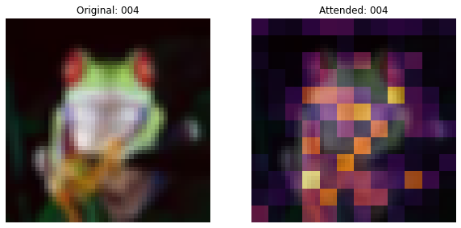
313/313 [==============================] - 8s 25ms/step - loss: 1.0235 - accuracy: 0.6345 - top-5-accuracy: 0.9660 - val_loss: 1.0085 - val_accuracy: 0.6424 - val_top-5-accuracy: 0.9640
Epoch 6/50
313/313 [==============================] - 8s 25ms/step - loss: 0.9190 - accuracy: 0.6729 - top-5-accuracy: 0.9741 - val_loss: 0.9066 - val_accuracy: 0.6850 - val_top-5-accuracy: 0.9751
Epoch 7/50
313/313 [==============================] - 8s 25ms/step - loss: 0.8331 - accuracy: 0.7056 - top-5-accuracy: 0.9783 - val_loss: 0.8844 - val_accuracy: 0.6903 - val_top-5-accuracy: 0.9779
Epoch 8/50
313/313 [==============================] - 8s 25ms/step - loss: 0.7526 - accuracy: 0.7376 - top-5-accuracy: 0.9823 - val_loss: 0.8200 - val_accuracy: 0.7114 - val_top-5-accuracy: 0.9793
Epoch 9/50
313/313 [==============================] - 8s 25ms/step - loss: 0.6853 - accuracy: 0.7636 - top-5-accuracy: 0.9856 - val_loss: 0.7216 - val_accuracy: 0.7584 - val_top-5-accuracy: 0.9823
Epoch 10/50
313/313 [==============================] - ETA: 0s - loss: 0.6260 - accuracy: 0.7849 - top-5-accuracy: 0.9877
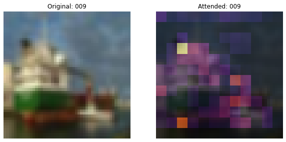
313/313 [==============================] - 8s 25ms/step - loss: 0.6260 - accuracy: 0.7849 - top-5-accuracy: 0.9877 - val_loss: 0.6985 - val_accuracy: 0.7624 - val_top-5-accuracy: 0.9847
Epoch 11/50
313/313 [==============================] - 8s 25ms/step - loss: 0.5877 - accuracy: 0.7978 - top-5-accuracy: 0.9897 - val_loss: 0.7357 - val_accuracy: 0.7595 - val_top-5-accuracy: 0.9816
Epoch 12/50
313/313 [==============================] - 8s 25ms/step - loss: 0.5615 - accuracy: 0.8066 - top-5-accuracy: 0.9905 - val_loss: 0.6554 - val_accuracy: 0.7806 - val_top-5-accuracy: 0.9841
Epoch 13/50
313/313 [==============================] - 8s 25ms/step - loss: 0.5287 - accuracy: 0.8174 - top-5-accuracy: 0.9915 - val_loss: 0.5867 - val_accuracy: 0.8051 - val_top-5-accuracy: 0.9869
Epoch 14/50
313/313 [==============================] - 8s 25ms/step - loss: 0.4976 - accuracy: 0.8286 - top-5-accuracy: 0.9921 - val_loss: 0.5707 - val_accuracy: 0.8047 - val_top-5-accuracy: 0.9899
Epoch 15/50
313/313 [==============================] - ETA: 0s - loss: 0.4735 - accuracy: 0.8348 - top-5-accuracy: 0.9939
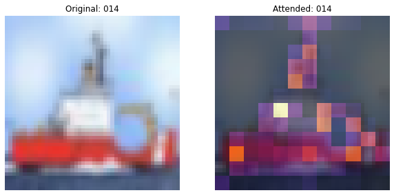
313/313 [==============================] - 8s 25ms/step - loss: 0.4735 - accuracy: 0.8348 - top-5-accuracy: 0.9939 - val_loss: 0.5945 - val_accuracy: 0.8040 - val_top-5-accuracy: 0.9883
Epoch 16/50
313/313 [==============================] - 8s 25ms/step - loss: 0.4660 - accuracy: 0.8364 - top-5-accuracy: 0.9936 - val_loss: 0.5629 - val_accuracy: 0.8125 - val_top-5-accuracy: 0.9906
Epoch 17/50
313/313 [==============================] - 8s 25ms/step - loss: 0.4416 - accuracy: 0.8462 - top-5-accuracy: 0.9946 - val_loss: 0.5747 - val_accuracy: 0.8013 - val_top-5-accuracy: 0.9888
Epoch 18/50
313/313 [==============================] - 8s 25ms/step - loss: 0.4175 - accuracy: 0.8560 - top-5-accuracy: 0.9949 - val_loss: 0.5672 - val_accuracy: 0.8088 - val_top-5-accuracy: 0.9903
Epoch 19/50
313/313 [==============================] - 8s 25ms/step - loss: 0.3912 - accuracy: 0.8650 - top-5-accuracy: 0.9957 - val_loss: 0.5454 - val_accuracy: 0.8136 - val_top-5-accuracy: 0.9907
Epoch 20/50
311/313 [============================>.] - ETA: 0s - loss: 0.3800 - accuracy: 0.8676 - top-5-accuracy: 0.9956
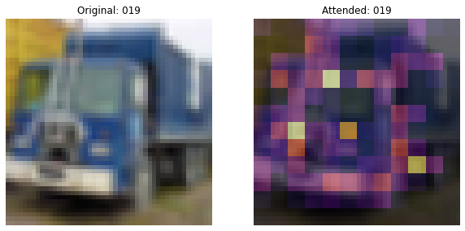
313/313 [==============================] - 8s 25ms/step - loss: 0.3801 - accuracy: 0.8676 - top-5-accuracy: 0.9956 - val_loss: 0.5274 - val_accuracy: 0.8222 - val_top-5-accuracy: 0.9915
Epoch 21/50
313/313 [==============================] - 8s 25ms/step - loss: 0.3641 - accuracy: 0.8734 - top-5-accuracy: 0.9962 - val_loss: 0.5032 - val_accuracy: 0.8315 - val_top-5-accuracy: 0.9921
Epoch 22/50
313/313 [==============================] - 8s 25ms/step - loss: 0.3474 - accuracy: 0.8805 - top-5-accuracy: 0.9970 - val_loss: 0.5251 - val_accuracy: 0.8302 - val_top-5-accuracy: 0.9917
Epoch 23/50
313/313 [==============================] - 8s 25ms/step - loss: 0.3327 - accuracy: 0.8833 - top-5-accuracy: 0.9976 - val_loss: 0.5158 - val_accuracy: 0.8321 - val_top-5-accuracy: 0.9903
Epoch 24/50
313/313 [==============================] - 8s 25ms/step - loss: 0.3158 - accuracy: 0.8897 - top-5-accuracy: 0.9977 - val_loss: 0.5098 - val_accuracy: 0.8355 - val_top-5-accuracy: 0.9912
Epoch 25/50
312/313 [============================>.] - ETA: 0s - loss: 0.2985 - accuracy: 0.8976 - top-5-accuracy: 0.9976
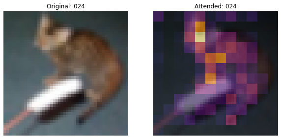
313/313 [==============================] - 8s 25ms/step - loss: 0.2986 - accuracy: 0.8976 - top-5-accuracy: 0.9976 - val_loss: 0.5302 - val_accuracy: 0.8276 - val_top-5-accuracy: 0.9922
Epoch 26/50
313/313 [==============================] - 8s 25ms/step - loss: 0.2819 - accuracy: 0.9021 - top-5-accuracy: 0.9977 - val_loss: 0.5130 - val_accuracy: 0.8358 - val_top-5-accuracy: 0.9923
Epoch 27/50
313/313 [==============================] - 8s 25ms/step - loss: 0.2696 - accuracy: 0.9065 - top-5-accuracy: 0.9983 - val_loss: 0.5096 - val_accuracy: 0.8389 - val_top-5-accuracy: 0.9926
Epoch 28/50
313/313 [==============================] - 8s 25ms/step - loss: 0.2526 - accuracy: 0.9115 - top-5-accuracy: 0.9983 - val_loss: 0.4988 - val_accuracy: 0.8403 - val_top-5-accuracy: 0.9921
Epoch 29/50
313/313 [==============================] - 8s 25ms/step - loss: 0.2322 - accuracy: 0.9190 - top-5-accuracy: 0.9987 - val_loss: 0.5234 - val_accuracy: 0.8395 - val_top-5-accuracy: 0.9915
Epoch 30/50
313/313 [==============================] - ETA: 0s - loss: 0.2180 - accuracy: 0.9235 - top-5-accuracy: 0.9988
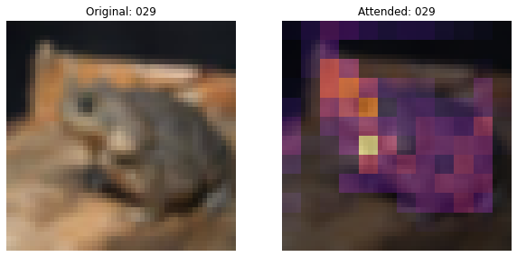
313/313 [==============================] - 8s 26ms/step - loss: 0.2180 - accuracy: 0.9235 - top-5-accuracy: 0.9988 - val_loss: 0.5175 - val_accuracy: 0.8407 - val_top-5-accuracy: 0.9925
Epoch 31/50
313/313 [==============================] - 8s 25ms/step - loss: 0.2108 - accuracy: 0.9267 - top-5-accuracy: 0.9990 - val_loss: 0.5046 - val_accuracy: 0.8476 - val_top-5-accuracy: 0.9937
Epoch 32/50
313/313 [==============================] - 8s 25ms/step - loss: 0.1929 - accuracy: 0.9337 - top-5-accuracy: 0.9991 - val_loss: 0.5096 - val_accuracy: 0.8516 - val_top-5-accuracy: 0.9914
Epoch 33/50
313/313 [==============================] - 8s 25ms/step - loss: 0.1787 - accuracy: 0.9370 - top-5-accuracy: 0.9992 - val_loss: 0.4963 - val_accuracy: 0.8541 - val_top-5-accuracy: 0.9917
Epoch 34/50
313/313 [==============================] - 8s 25ms/step - loss: 0.1653 - accuracy: 0.9428 - top-5-accuracy: 0.9994 - val_loss: 0.5092 - val_accuracy: 0.8547 - val_top-5-accuracy: 0.9921
Epoch 35/50
313/313 [==============================] - ETA: 0s - loss: 0.1544 - accuracy: 0.9464 - top-5-accuracy: 0.9995
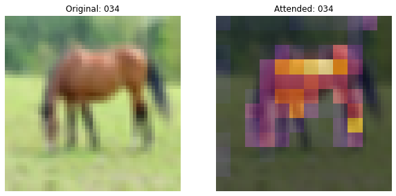
313/313 [==============================] - 7s 24ms/step - loss: 0.1544 - accuracy: 0.9464 - top-5-accuracy: 0.9995 - val_loss: 0.5137 - val_accuracy: 0.8513 - val_top-5-accuracy: 0.9928
Epoch 36/50
313/313 [==============================] - 8s 25ms/step - loss: 0.1418 - accuracy: 0.9507 - top-5-accuracy: 0.9997 - val_loss: 0.5267 - val_accuracy: 0.8560 - val_top-5-accuracy: 0.9913
Epoch 37/50
313/313 [==============================] - 8s 25ms/step - loss: 0.1259 - accuracy: 0.9561 - top-5-accuracy: 0.9997 - val_loss: 0.5283 - val_accuracy: 0.8584 - val_top-5-accuracy: 0.9923
Epoch 38/50
313/313 [==============================] - 8s 25ms/step - loss: 0.1166 - accuracy: 0.9599 - top-5-accuracy: 0.9997 - val_loss: 0.5541 - val_accuracy: 0.8549 - val_top-5-accuracy: 0.9919
Epoch 39/50
313/313 [==============================] - 8s 25ms/step - loss: 0.1111 - accuracy: 0.9624 - top-5-accuracy: 0.9997 - val_loss: 0.5543 - val_accuracy: 0.8575 - val_top-5-accuracy: 0.9917
Epoch 40/50
312/313 [============================>.] - ETA: 0s - loss: 0.1017 - accuracy: 0.9653 - top-5-accuracy: 0.9997
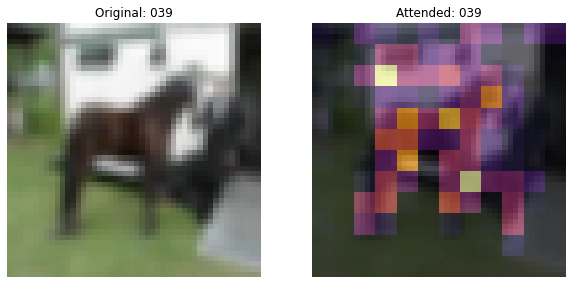
313/313 [==============================] - 8s 25ms/step - loss: 0.1016 - accuracy: 0.9653 - top-5-accuracy: 0.9997 - val_loss: 0.5357 - val_accuracy: 0.8614 - val_top-5-accuracy: 0.9923
Epoch 41/50
313/313 [==============================] - 8s 25ms/step - loss: 0.0925 - accuracy: 0.9687 - top-5-accuracy: 0.9998 - val_loss: 0.5248 - val_accuracy: 0.8615 - val_top-5-accuracy: 0.9924
Epoch 42/50
313/313 [==============================] - 8s 25ms/step - loss: 0.0848 - accuracy: 0.9726 - top-5-accuracy: 0.9997 - val_loss: 0.5182 - val_accuracy: 0.8654 - val_top-5-accuracy: 0.9939
Epoch 43/50
313/313 [==============================] - 8s 25ms/step - loss: 0.0823 - accuracy: 0.9724 - top-5-accuracy: 0.9999 - val_loss: 0.5010 - val_accuracy: 0.8679 - val_top-5-accuracy: 0.9931
Epoch 44/50
313/313 [==============================] - 8s 25ms/step - loss: 0.0762 - accuracy: 0.9752 - top-5-accuracy: 0.9998 - val_loss: 0.5088 - val_accuracy: 0.8686 - val_top-5-accuracy: 0.9939
Epoch 45/50
312/313 [============================>.] - ETA: 0s - loss: 0.0752 - accuracy: 0.9763 - top-5-accuracy: 0.9999
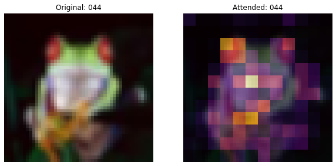
313/313 [==============================] - 8s 26ms/step - loss: 0.0752 - accuracy: 0.9764 - top-5-accuracy: 0.9999 - val_loss: 0.4844 - val_accuracy: 0.8679 - val_top-5-accuracy: 0.9938
Epoch 46/50
313/313 [==============================] - 8s 25ms/step - loss: 0.0789 - accuracy: 0.9745 - top-5-accuracy: 0.9997 - val_loss: 0.4774 - val_accuracy: 0.8702 - val_top-5-accuracy: 0.9937
Epoch 47/50
313/313 [==============================] - 8s 25ms/step - loss: 0.0866 - accuracy: 0.9726 - top-5-accuracy: 0.9998 - val_loss: 0.4644 - val_accuracy: 0.8666 - val_top-5-accuracy: 0.9936
Epoch 48/50
313/313 [==============================] - 8s 25ms/step - loss: 0.1000 - accuracy: 0.9697 - top-5-accuracy: 0.9999 - val_loss: 0.4471 - val_accuracy: 0.8636 - val_top-5-accuracy: 0.9933
Epoch 49/50
313/313 [==============================] - 8s 25ms/step - loss: 0.1315 - accuracy: 0.9592 - top-5-accuracy: 0.9997 - val_loss: 0.4411 - val_accuracy: 0.8603 - val_top-5-accuracy: 0.9926
Epoch 50/50
313/313 [==============================] - ETA: 0s - loss: 0.1828 - accuracy: 0.9447 - top-5-accuracy: 0.9995
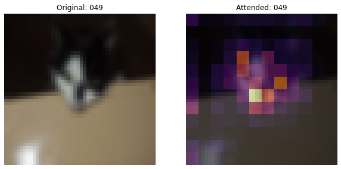
313/313 [==============================] - 8s 25ms/step - loss: 0.1828 - accuracy: 0.9447 - top-5-accuracy: 0.9995 - val_loss: 0.4614 - val_accuracy: 0.8480 - val_top-5-accuracy: 0.9920
79/79 [==============================] - 1s 8ms/step - loss: 0.4696 - accuracy: 0.8459 - top-5-accuracy: 0.9921
Loss: 0.47
Top 1 test accuracy: 84.59%
Top 5 test accuracy: 99.21%
Inference
Here, we use the trained model to plot the attention map.
def plot_attention(image):
"""Plots the attention map on top of the image.
Args:
image: A numpy image of arbitrary size.
"""
# Resize the image to a (32, 32) dim.
image = ops.image.resize(image, (32, 32))
image = image[np.newaxis, ...]
test_augmented_images = patch_conv_net.preprocessing_model(image)
# Pass through the stem.
test_x = patch_conv_net.stem(test_augmented_images)
# Pass through the trunk.
test_x = patch_conv_net.trunk(test_x)
# Pass through the attention pooling block.
_, test_viz_weights = patch_conv_net.attention_pooling(test_x)
test_viz_weights = test_viz_weights[np.newaxis, ...]
# Reshape the vizualization weights.
num_patches = ops.shape(test_viz_weights)[-1]
height = width = int(math.sqrt(num_patches))
test_viz_weights = layers.Reshape((height, width))(test_viz_weights)
selected_image = test_augmented_images[0]
selected_weight = test_viz_weights[0]
# Plot the images.
fig, ax = plt.subplots(nrows=1, ncols=2, figsize=(10, 5))
ax[0].imshow(selected_image)
ax[0].set_title(f"Original")
ax[0].axis("off")
img = ax[1].imshow(selected_image)
ax[1].imshow(selected_weight, cmap="inferno", alpha=0.6, extent=img.get_extent())
ax[1].set_title(f"Attended")
ax[1].axis("off")
plt.axis("off")
plt.show()
plt.close()
url = "http://farm9.staticflickr.com/8017/7140384795_385b1f48df_z.jpg"
image_name = keras.utils.get_file(fname="image.jpg", origin=url)
image = keras.utils.load_img(image_name)
image = keras.utils.img_to_array(image)
plot_attention(image)
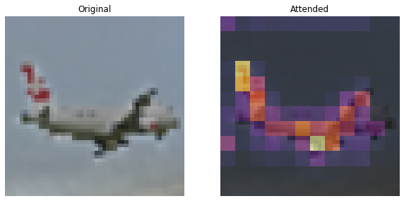
Conclusions
The attention map corresponding to the trainable CLASS
token and the patches of the image helps explain the classificaiton
decision. One should also note that the attention maps gradually get
better. In the initial training regime, the attention is scattered all
around while at a later stage, it focuses more on the objects of the
image.
The non-pyramidal convnet achieves an accuracy of ~84-85% top-1 test accuracy.
I would like to thank JarvisLabs.ai for providing GPU credits for this project.